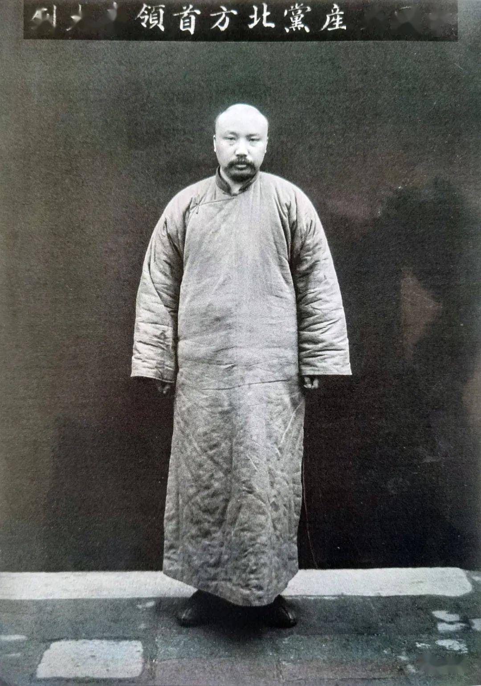

李大钊

字守常，直隶乐亭（今河北）人。中国最早的马克思主义者，中国共产党早期领导人之一。
生平
早年
- 1889年10月29日（清光绪十五年十月初六日），李大钊生于河北省乐亭县大黑坨村。
- 1899年，李与夫人赵纫兰结婚。
- 1907年夏，李到天津投考新式学堂，被长芦银行实习所录取，最终选定北洋法政专门学堂。
- 1909年，孙洪伊、王法勤等发起成立实业研究会，李任书记员。
- 1913年4月，李在《言治》第一期发表〈大哀篇〉、〈论弹劾用语之解纷〉；7月至8月，李毕业于北洋政法专门学校，旋赴北京。中国社会党领袖陈翼龙被杀，社会党被查封，李大钊逃离北平，避难于家乡乐亭县的祥云岛，及后得到汤化龙和孙洪伊的资助。冬，赴日本留学。
- 1914年春，李在东京中华基督教青年会馆内学习英语和日语。夏，和章士钊相识，并向其约稿。李和明治大学的高一涵合办“甲寅”杂志。9月，李入读日本早稻田大学政治经济科。李组织神州学会，进行反袁世凯活动。李开始接触社会主义思想，受茅原华山影响甚深。
- 1915年1月，日本政府向袁世凯提出“二十一条”。4月，李与张润之翻译出版今井嘉幸《中国国际法论》，李执笔〈译序〉。6月，李编印《国耻纪念录》，内中发表〈国民之薪胆〉。7月，李修毕早稻田大学第一学年。8月，李发表〈厌世心与自觉心〉于《甲寅》杂志，批疑陈独秀〈爱国心与自觉心〉。李号召国人以“破釜沉舟之决心”誓死反抗。12月，袁称复帝制，于1916年洪宪建元，改民国为“中华帝国”。
- 1916年1月，乙卯学会与中华学会合并组成神州学会，宗旨为“以研究学术、敦崇气节、唤起国民自觉、图谋国家富强”，李、林伯渠、高一涵、易象等为主要成员。5月，李回中国，在北京创办《晨钟报》，任总编辑。旋辞职，任《甲寅日刊》编辑，推动新文化运动的发展。
- 1918年1月经章士钊向北京大学校长蔡元培推荐，担任北京大学图书馆主任。其后担任过经济系、历史等系教授，参与编辑《新青年》，并和陈独秀创办《每周评论》，推动共产主义。
组建中共
- 1920年，和陈独秀酝酿组建中国共产党，发起组织马克思学说研究会。同年10月，和邓中夏、高君宇、何孟雄等一同建立北京共产主义小组。中共建党后，任二、三、四届中央委员。
- 1922年李大钊根据共产国际指示，赴上海会见孙中山。
- 1923年国民党北京地区党务负责人卢钊指称李大钊为首鼠两端的骑墙人，指责李大钊假意国共合作。
- 1924年参与“国共合作”。
逮捕及处决
- 1925年五卅运动爆发后，李大钊与赵世炎等人在北平组织5万余人的示威。
- 1927年4月6日，在西方国家驻华公使团的授权下，张作霖派警察总监陈兴亚指挥京师警察厅侦缉处处长吴郁文、副处长雷恒成率500多奉系宪兵与京师警察突袭搜查苏联大使馆，李大钊全家同时在苏联大使馆被捕，李大钊接受京师警察厅司法处长蒲志中的军法审判。
- 1927年4月28日，李大钊等20名国共人员被以“和苏俄通谋，里通外国”为罪名绞刑处决，时年37岁。20名被处决者中，第一个受刑的就是李大钊，因刽子手缺乏经验，李大钊先后被绞了三次。
遗著
- 人民出版社约请中央马列编译局研究室的丁守和、殷叙彝等人编选了《李大钊选集》，共收录论文、演讲词、杂文、讲义等133篇，约39万字。
- 人民文学出版社约请李大钊的女婿贾芝编选了《李大钊诗文选》，收录诗歌、随感、散文、游记、通信、论文等170篇，约20万字。
- 1960年邓拓安排北京市委党校编写《李大钊传》一书，1979年人民出版社出版了该书。
- 1984年10月，北京市委党校中共党史教研室编辑的《李大钊文集》由人民出版社出版，该文集将所收集到的李大钊遗著全部收入，共439篇，近65万字。
家庭
| 关系 | 姓名 |
| 祖父 | 李如珍 |
| 父亲 | 李任荣 |
| 母亲 | 周氏 |
| 夫人 | 赵纫兰 |
| 长子 | 李葆华 |
| 长女 | 李星华 |
| 次女 | 李炎华 |
| 次子 | 李光华 |
| 三女 | 李钟华 |
| 三子 | 李欣华 |